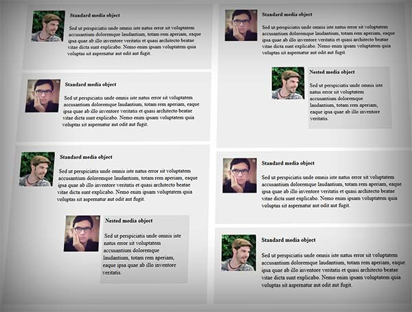

2 colonnes en CSS
Qui suis-je ?
Je suis Thomas ZILLIOX, un web développeur freelance sur Lyon.
- Je suis spécialisé dans l'industrialisation du CSS :
Formation, conseil, mise en place d'outils, de bonnes pratiques, etc. ; - Je fais aussi du développement JS & PHP ;
- Je blog (rarement) sur mon site http://tzi.fr ;
- Je tweete (plus souvent) sur @iamtzi.
1. Dimensioner un élément

1.B. La largeur
Définir un width: 100%
est souvent une mauvaise idée.
1.B. La largeur
Les éléments blocks s’empilent de haut en bas. On parle de flux vertical.
1.C. La hauteur
Avec la valeur par défaut, height: auto
, la hauteur d’un élément block s’adapte à son contenu.
1.D. Les marges
Attention, les marges en pourcentages sont surprennantes !
1.D. Les marges
Les marges verticales fusionnent :
- avec celles du parent qui n’a pas de contenu textuel, border ou padding.
- avec celles des éléments frères.
1.D. Les marges
Les marges peuvent servir à positionner horizontalement un élément block à l'intérieur d'un autre.
1.E. Le box-sizing
Un box-model qui n'est pas du tout pratique pour la vie des projets.
1.E. Le box-sizing
La solution avec box-sizing
(support IE8+).
1.F. Conclusion
- Toujours utiliser
box-sizing: border-box
; - Les éléments block ont un flux seulement vertical ;
- Il vaut mieux privilégier le padding au margin pour éviter les fusions ;
- Il vaut mieux éviter les hauteurs et les marges en pourcentage.
2. Les flotants
2.A. Le flux entre éléments frères
Les éléments flotants n'ont pas d'empreinte dans le flux pour ses frères.
2.A. Le flux entre éléments frères
En créant un BFC, on peut créer deux colonnes sans chevauchement.
2.B. Le flux entre parent et enfant
Les éléments flotants n'ont pas d'empreinte dans le flux pour leur parent.
2.B. Le flux entre parent et enfant
On peut rétablir le flux à l'intérieur du parent, en créant un BFC ou à l'aide d'un pseudo-élément.
2.C. Conclusion
Les flottants sont des éléments compliqués à stylisés parce qu'ils n'ont pas d'enpreintes dans le flux. En échange, le support est très bon et très pratique pour réaliser des media objects.
3. Les tableaux
3.A. Les tableaux
Les tableaux en CSS sont très facile à utiliser (support IE8+)..
1.A. Le box-model
Savez-vous ce que va afficher ce script ?